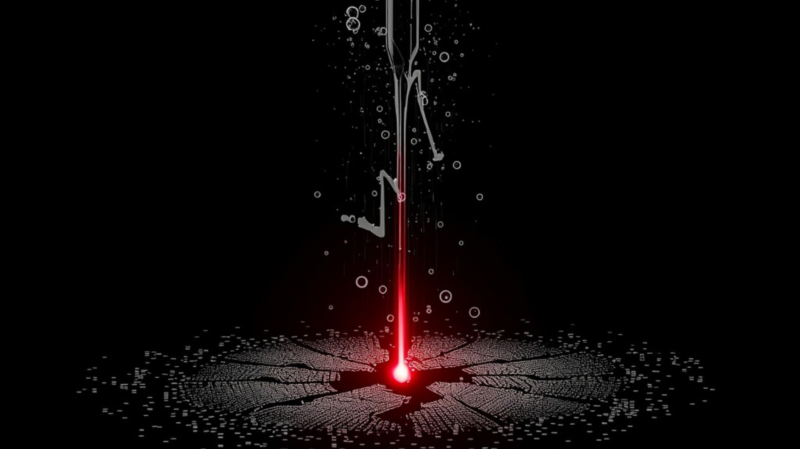
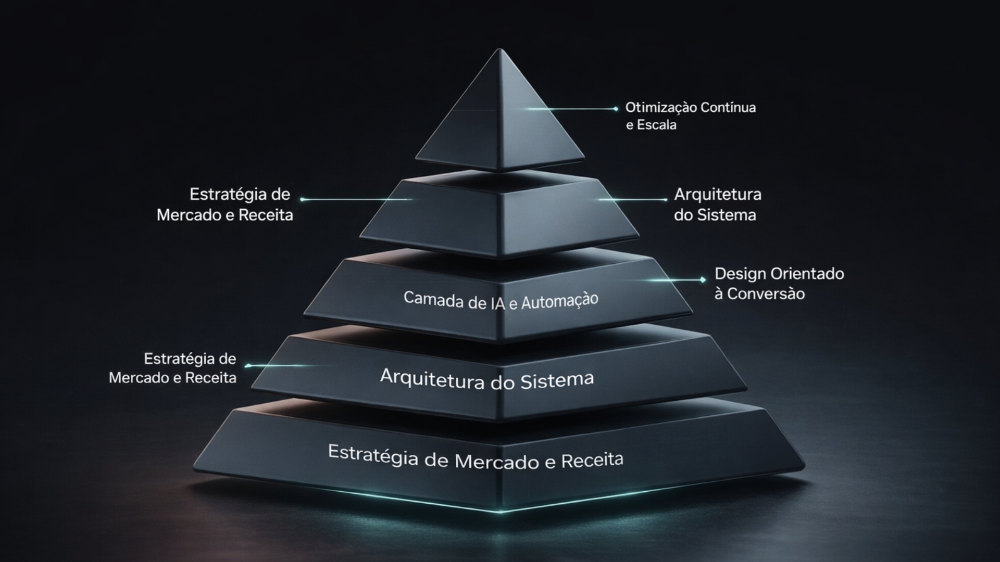

A ASARAX projeta sistemas digitais orientados por IA, construídos para adquirir, converter e escalar receita de forma previsível.
Eles consomem tráfego, desperdiçam leads e não geram crescimento previsível.


Trabalhamos com um número limitado de empresas por mês para garantir execução profunda e estratégica.
Solicitar chamada estratégica